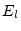

In sections 7.1-7.9 we describe the main programs to run an SCF cycle as illustrated in figure 4.1.
lapw0 computes the total potential as the sum of the Coulomb and the exchange-correlation potential using the total electron (spin) density as input. It generates the spherical part (l=0) as case.vsp and the non-spherical part as case.vns. For spin-polarized systems, the spin-densities case.clmup and case.clmdn lead to two pairs of potential files. These files are called: case.vspup, case.vnsup and case.vspdn, case.vnsdn.
The Coulomb potential is calculated by the multipolar Fourier expansion introduced by Weinert (81). Utilizing the spatial partitioning of the unit cell and the dual representation of the charge density [equ. 2.10], firstly the multipole moments inside the spheres are calculated (Q-sp). The Fourier series of the charge density in the interstitial also represent SOME density inside the spheres, but certainly NOT the correct density there. Nevertheless, the multipole moments of this artificial plane-wave density inside each sphere are also calculated (Q-pw). By subtracting Q-pw from Q-sp one obtains pseudo-multipole moments Q. Next a new plane-wave series is generated which has two properties, namely zero density in the interstitial region and a charge distribution inside the spheres that reproduces the pseudo-multipole moments Q. This series is added to the original interstitial Fourier series for the density to form a new series which has two desirable properties: it simultaneously represents the interstitial charge density AND it has the same multipole moments inside the spheres as the actual density. Using this Fourier series the interstitial Coulomb potential follows immediately by dividing the Fourier coefficients by (up to a constant).
Inside the spheres the Coulomb potential is obtained by a straightforward classical Green's function method for the solution of the boundary value problem.
The exchange-correlation potential is computed numerically on a grid. Inside the atomic spheres a least squares procedure is used to reproduce the potential using a lattice harmonics representation (the linear equations are solved with modified LINPACK routines). In the interstitial region a 3-dimensional fast Fourier transformation (FFT) is used.
The total potential is obtained by summation of the Coulomb and exchange-correlation potentials .
In order to find the contribution from the plane wave representation to the Hamilton matrix elements we reanalyze the Fourier series in such a way that the new series represents a potential which is zero inside the spheres but keeps the original value in the interstitial region and this series is put into case.vns.
The contribution to the total energy which involves integrals of the
form  is calculated according to the formalism of Weinert et
al (82).
is calculated according to the formalism of Weinert et
al (82).
The Hellmann-Feynman force contribution to the total force is also calculated (Yu et al 91).
Finally, the electric field gradient (EFG) is calculated in case you have an L=2 term in the density expansion. The EFG tensor is given in both, the ``local-rotation-matrix'' coordinate system, and then diagonalized. The resulting eigenvectors of this rotation are given by columns.
For surface calculations the total and electrostatic potential at z=0 and z=0.5 is calculated and can be used as energy-zero for the determination of the workfunction. (It is assumed that the middle of your vacuum region is either at z=0 or z=0.5).
The program lapw0 is executed by invoking the command:
lapw0 lapw0.def or x lapw0
The following parameters are used (they are collected in file param.inc, but usually need not to be changed:
| NCOM | number of lm components in charge density and potential representation; it must satisfy the following condition: NCOM+3 .gt. [number of with ] + [2 * number of with ] |
| NRAD | number of radial mesh points |
| NSTD | defines the angular grid points used in fitting the xc-potential inside spheres |
| LMAX1D | defines the angular grid points used in fitting the xc-potential inside spheres |
| LMAX2 | highest L in the LM expansion of charge and potential |
| NSYM | order of point group |
The input is very simple. It is generated automatically by init_lapw, and needs to be changed only if a different exchange-correlation potential should be used:
------------------ top of file: case.in0 -------------------- TOT 13 MULT/COUL/EXCH/POT /TOT ; VXC-SWITCH NR2V IFFT (R2V) 30 30 108 4.00 min IFFT-parameters, enhancement factor 0 0.0 (#of FK in E-field expansion, EFELD (Ry) ------------------- bottom of file ---------------------------
Interpretive comments follow:
| switch | ||
| TOT | total energy contributions and total potential calculated | |
| POT | total potential is calculated, but not the total energy | |
| MULT | multipole moments calculated only | |
| COUL | Coulomb potential calculated only | |
| EXCH | exchange correlation potential calculated only | |
| NOTE: MULT, COUL, and EXCH are for testing only, whereas POT, saves some CPU time if total energy is not needed | ||
| indxc | index to specify type of exchange and correlation potential. Supported options (for more options see the SRC_lapw0/vxclm2.f subroutine) include: | |
| 5 | Perdew and Wang 92, reparameterization of Ceperly-Alder data, the recommended LDA option | |
| 13 | Generalized Gradient approximation (Perdew-Burke-Ernzerhof 96) | |
| 11 | Generalized Gradient approximation (Wu-Cohen 2006, Tran et al. 2007) | |
| 12 | Meta GGA (Perdew et al. 1999). You must have a case.inm_vresp file (cp case.inm case.inm_vresp and set NORM = NO) to generate the required input files for this option (run one scf cycle with PBE after you created case.inm_vresp). In addition you must use very large IFFT parameters, but even so it might be numerically unstable. | |
| 27 | Meta GGA (Tao et al. 2003). At present the ``best'' meta-GGA. (See also the option above.) Note: Only is obtained that way, of standard PBE is used. |
| IPRINT | NR2V | no additional output |
| R2V | Exchange-correlation (case.r2v), Coulomb
(case.vcoul) and
total potentials (case.vtotal)
are written as ( |
|
| H-mod | EECE | On-site Hartree-Fock (inside spheres) for selected electrons (see 4.5.7) |
| HYBR | On-site Hybrid functionals (inside spheres) (see 4.5.7) | |
| FFTopt | IFFT | optional keyword, which lets you define the IFFTx mesh and an enhancement factor in the next line |
| IFFTx,y,z | FFT-mesh parameters in x,y,z directioni for the calculation of the XC-potential in the interstitial region. Usually set automatically in init_lapw (dstart). The ratio of the 3 numbers should be indirect proportional to the lattice parameters. | |
| IFFTfactor | Multiplicative factor to the IFFT grid specified above. It needs to be enlarged for highly accurate GGA or meta-GGA calculations as well as for systems with H atoms with small spheres. |
The following line is optional and can be omitted. It is used to introduce an electric field via a zig-zag potential (see J.Stahn et al. 2001):
| IFIELD | number of Fourier coefficients to model the zig-zag potential. Typically use IEFIELD=30; -999 lists available modes (form) of fields, and these modes can be specified by mode=IEFIELD/1000. (default: mode=0) | |
| EFIELD | value (amplitude) of the electric field. The electric field (in Ry/bohr) corresponds to EFIELD/c, where c is your c lattice parameter. | |
| WFIELD | optional value for lambda (see output of IEFIELD=-999). |
This program was contributed by:
orb calculates the orbital dependent potentials, i.e. potentials which are nonzero in the atomic spheres only and depend on the orbital state numbers . In the present version the potential is assumed to be independent of the radius vector and needs the density matrix calculated in lapwdm. Four different potentials are implemented in this package:
| (11) |
| (12) |
In all cases the resulting potential for a given atom and orbital number  is a
Hermitian, x matrix. In general this matrix is complex, but in special
cases it may be real.
is a
Hermitian, x matrix. In general this matrix is complex, but in special
cases it may be real.
For more information see also section 4.5.6.
The program orb is executed by invoking the command:
x orb [ -up/-dn/-du ] or orb up/dnorb.def
The following parameters are used (collected in file param.inc):
| LABC | highest l+1 value of orbital dependent potentials |
| NRAD | number of radial mesh points |
Since this program can handle three different cases, examples and descriptions for all cases are given below:
| nmod | defines the type of potential 1...LDA+U, 2...OP, 3... | |
| natorb | number of atoms for which orbital potential is calculated | |
| ipr | printing option, the larger ipr, the longer the output |
| mixmod | PRATT or BROYD (should not be changed, see MIXER for more information) | |
| amix | coefficient for the Pratt mixing of | |
| This option is now only used for testing. The mixing should be set to PRATT, 1.0 |
| iatom | index of atom in struct file | |
| nlorb | number of orbital moments for which Vorb shall be applied | |
| lorb | orbital numbers (repeated nlorb-times) |
| nsic | defines 'double counting correction' | |
| nsic=0 | 'AMF method' (Czyzyk et al. 1994) | |
| nsic=1 | 'SIC method' (Anisimov et al. 1993, Liechtenstein et al. 1995) | |
| nsic=2 | 'HMF method' (Anisimov et al. 1991) |
| U(li,i), J(li,i) | Coulomb and exchange parameters, U and J, for LDA+U in Ry for atom type i and orbital number li. We recommend to use only. |
Example of the input file for NiO (LDA+U included for two inequivalent Ni atoms that have indexes 1 and 2 in the structure file):
1 2 0 nmod, natorb, ipr PRATT,1.0 mixmod, amix 1 1 2 iatom nlorb, lorb 2 1 2 iatom nlorb, lorb 1 nsic (LDA+U(SIC) used) 0.52 0.0 U J 0.52 0.0 U J
| nmodop | defines mode of 'OP' | |
| 1 | average taken separately for spin up, spin down | |
| 0 | average is the sum for spin up and spin down |
| Ncalc(i) | ||
| 1 | Orb.pol. parameters are calculated ab-initio | |
| 0 | Orb.pol. parameters are read from input |
| pop(li,i) | OP parameter in Ry |
| direction of magnetization expressed in terms of lattice vectors |
Example of the input file for NiO (total used in (1), OP parameters calculated ab-initio, along [001]):
2 2 0 nmod, natorb, ipr PRATT, 1.0 mixmod, amix 1 1 2 iatom nlorb, lorb 2 1 2 iatom nlorb, lorb 0 nmodop 1 Ncalc 1 Ncalc 0. 0. 1. direction of M in terms of lattice vectors
| external field in Tesla |
| direction of magnetization expressed in terms of lattice vectors |
Example of the input file for NiO, (= 4 T, along [001]):
3 2 0 nmod, natorb, ipr PRATT, 1.0 mixmod, amix 1 1 2 iatom nlorb, lorb 2 1 2 iatom nlorb, lorb 4. Bext in T 0. 0. 1. direction of Bext in terms of lattice vectors
lapw1 sets up the Hamiltonian and the overlap matrix (Koelling and Arbman 75) and finds by diagonalization eigenvalues and eigenvectors which are written to case.vector. Besides the standard LAPW basis set, also the APW+lo method (see Sjöstedt et al 2000, Madsen et al. 2001) is supported and the basis sets can be mixed for maximal efficiency. If the file case.vns exists (i.e. non-spherical terms in the potential), a full-potential calculation is performed.
For structures without inversion symmetry, where the hamilton and overlap matrix elements are complex numbers, the corresponding program version lapw1c must be used in connection with lapw2c.
Since usually the diagonalization is the most time consuming part of the calculations, several options exist here. In WIEN2k we include highly optimized modifications of LAPACK routines. We call all these routines ``full diagonalization'', but we also provide an option to do an ``iterative diagonalization'' using a block-Davidson method (see Singh 89). This scheme starts from an old eigenvector (previous scf-iteration), needs additional memory and produces only approximate eigenvalues/vectors, but can be significantly faster than LAPACK, in particular if the ratio of matrix size to number of relevant (e.g. occupied) eigenvalues is large. In any case, proper convergence can most likely NOT be obtained with ``iterative diagonalization'' alone, thus one needs a ``full diagonalization'' from time to time (typically every 4 - 8th iteration). This can be achieved automatically using eg. run_lapw -it 4 -fc 10 .
Parallel execution (fine grain and on the k-point level) is also possible and is described in detail in Sec. 5.5.
The program lapw1 is executed by invoking the command:
x lapw1 [-c -up|dn -it -p -nohns -orb] or
lapw1 lapw1.def or lapw1c lapw1.def
In cases without inversion symmetry, the default input filename is case.in1c. For semi-core calculations the lapw1s.def file uses a case.in1s file and creates the files case.output1s and case.vectors. For the spin-polarized case lapw1 is called twice with uplapw1.def and dnlapw1.def. To all relevant files the keywords ``up`` or ``dn`` are appended (see the fcc Ni test case in the WIEN2k package). The switch -nohns skips the calculation of the nonspherical matrix elements inside the sphere. This may be used to save computer time during the first scf cycles.
The following parameters (collected in file param.inc_r or param.inc_c) are used:
| KMAX1START | a first guess for the largest h,k,l Fourier components of the potential |
| KMAX2START | |
| KMAX3START | |
| LMAX | highest l+1 in basis function inside sphere (consistent with input in case.in1) |
| LMMX | number of LM terms in potential (should be at least NCOM-1) |
| LOMAX | highest l for local orbital basis (consistent with input in case.in1) |
| NGAU | number of Gaunt coefficients for the non-spherical contributions to the matrix elements |
| NKPTSTART | a starting guess for the total number of k-points in irreducible wedge of Brillouin zone |
| NMATMAX | maximum size of H,S-matrix (defines size of program, should be chosen according to the memory of your hardware!) |
| NRAD | number of radial mesh points |
| NSLMAX | highest l+1 in basis functions for non-muffin-tin matrix elements (consistent with input in case.in1).If set larger than 5, parameter MAXDIM (modules.F) and LOMAX=8, P(10,10) (gaunt2.f) must also be increased. |
| NSYM | order of point group |
| NUME | maximum number of energy eigenvalues per k-point |
| NVEC1 | defines the largest triple of integers which define reciprocal |
| NVEC2 | K-vectors when multiplied with the reciprocal Bravais matrix |
| NVEC3 | |
| NLOAT | max number of LOs for one |
Below a sample input is shown for  (rutile), one of the
test cases provided in the WIEN2k package. The input file is
written automatically by LSTART, but was modified to set APW only for Ti-3d
and O-2p orbitals. In addition UNIT was changed to 5 and k-points where
inserted by hand for bandstructure plotting.
(rutile), one of the
test cases provided in the WIEN2k package. The input file is
written automatically by LSTART, but was modified to set APW only for Ti-3d
and O-2p orbitals. In addition UNIT was changed to 5 and k-points where
inserted by hand for bandstructure plotting.
------------------ top of file: case.in1 --------------------
WFFIL (WFPRI,WFFIL,SUPWF ; wave fct. print,file,suppress
7.500 10 4 (R-mt*K-max; MAX l, max l for hns )
0.30 5 0 (global energy parameter E(l), with 5 other choices, LAPW)
0 -3.00 0.020 CONT 0 ENERGY PARAMETER for s, LAPW
0 0.30 0.000 CONT 0 ENERGY PARAMETER for s-local orbital, LAPW-LO
1 -1.90 0.020 CONT 0 ENERGY PARAMETER for p LAPW
1 0.30 0.000 CONT 0 ENERGY PARAMETER for p-local orbitals LAPW-LO
2 0.20 0.020 CONT 1 APW
0.20 3 0 (global energy parameter E(l), with 1 other choice, LAPW)
0 -0.90 0.020 STOP 0 LAPW
0 0.30 0.000 CONT 0 LAPW-LO
1 0.30 0.000 CONT 1 APW
K-VECTORS FROM UNIT:5 -9.0 1.5 IUNIT, Emin, Emax
GAMMA 0 0 0 2 1.00
0 0 1 10 2.00
0 0 2 10 2.00
0 0 3 10 2.00
0 0 4 10 2.00
Z 0 0 5 10 1.00
END
------------------- bottom of file ------------------------
Interpretive comments follow:
| WFFIL | standard option, writes wave functions to file case.vector (needed in lapw2) | |
| SUPWF | suppresses wave function calculation (faster for testing eigenvalues only) | |
| WFPRI | prints eigenvectors to case.output1 and writes case.vector (produces long outputs!) |
| rkmax |
|
|
| Note, that the actual matrix size is written on case.scf1. It is determined by whatever is smaller, the plane wave cut-off (specified with RKmax) or the maximum matrix dimension NMATMAX, (see previous section). | ||
| lmax | maximum l value for partial waves used inside atomic spheres (should be between 8 and 12) | |
| lnsmax | maximum l value for partial waves used in the computation of non-muffin-tin matrix elements (lnsmax=4 is quite good) |
| Etrial | default energy used for all  to obtain |
|
| ndiff | number of exceptions (specified in the next ndiff lines) | |
| Napw | 0 ... use LAPW basis, 1 ... use APW-basis for all ``global'' |
| l | l of partial wave | |
| El | for L=l | |
| de | energy increment | |
| de=0: this E(l) overwrites the default energy (from line 3) | ||
| de 0: a search for a resonance energy using this increment is done. The radial function up to the muffin-tin radius RMT varies with the energy. A typical case is schematically shown in Fig. 7.1. | ||
| At the bottom of the energy bands u has a zero slope
(bonding state), but it has a zero value (antibonding state)
at the top of the bands. One can search up and down in
energy starting with using the increment de to find
where changes sign in value to
determine |
||
| switch | used only if de.ne.0 | |
| CONT | calculation continues, even if either |
|
| STOP | calculation stops if not both |
|
| NAPWL | 0 ... use LAPW basis, 1 ... use APW-basis for this |
| unit-number | file number from which the k-vectors in the irreducible wedge of the Brillouin zone are read. 5 specifies the input file itself (as shown in the example), default is 4, for which the corresponding information is contained in case.klist (generated by KGEN). | |
| EMIN, EMAX | energy window in which eigenvalues shall be searched (overrides setting in case.klist. A small window saves computer time, but it also limits the energy range for the DOS calculation of unoccupied states. |
| name | name of k-vector (optional) | |
| : the last line must be END !! | ||
| ix,iy,iz, idv | defines the k-vector, where x= ix/idv etc. We use carthesian coordinates in units
of , |
|
| weight | of k-vector (order of group of k) |
lapwso includes spin-orbit (SO) coupling in a second-variational
procedure and computes eigenvalues and eigenvectors (stored in
case.vectorso) using the scalar-relativistic wavefunctions from
lapw1. For reference see Singh 94 and Novák 97. The SO
coupling must be small, as it is diagonalized in the space of the
scalar relativistic eigenstates. For large spin orbit effects it
might be necessary to include many more eigenstates from lapw1
by increasing EMAX in case.in1 (up to 10 Ry!).
We also provide an additional basisfunction, namely an LO with a  radial wavefunction, which improves the basis and removes to a large degree
the dependency of the results on EMAX and RMT (see Kuneš et al. 2001).
SO is considered only within the atomic spheres and thus the results may
depend to some extent on the choice of atomic spheres radii. The nonspherical
potential is neglected when calculating .
Orbital dependend potentials (LDA+U, EECE or OP) can be added to the hamiltonian
in a cheap and simple way.
radial wavefunction, which improves the basis and removes to a large degree
the dependency of the results on EMAX and RMT (see Kuneš et al. 2001).
SO is considered only within the atomic spheres and thus the results may
depend to some extent on the choice of atomic spheres radii. The nonspherical
potential is neglected when calculating .
Orbital dependend potentials (LDA+U, EECE or OP) can be added to the hamiltonian
in a cheap and simple way.
In spin-polarized calculations the presence of spin-orbit coupling may reduce symmetry and even split equivalent atoms into non-equivalent ones. It is then necessary to consider a larger part of the Brillouin zone and the input for lapw2 should also be modified since the potential has lower symmetry than in the non-relativistic case. The following inputs may change:
We recommend to use initso (see Sec.5.2.16) which helps you together with symmetso (see Sec.9.1) to setup spinorbit calculations.
Note: SO eigenvectors are complex and thus lapw2c must be used in a selfconsistent calculation.
The program lapwso is executed by invoking the command:
x lapwso [ -up -p -c -orb] or
lapwso lapwso.def
where here -up indicates a spin-polarized calculation (no ``-dn'' is needed, since spin-orbit will mix spin-up and dn states in one calculation).
The following parameters are used (collected in file param.inc):
| FLMAX | constant = 3 |
| LMAX | highest l of wave function inside sphere (consistent with lapw1) |
| LABC | highest l of wave function inside sphere where SO is considered |
| LOMAX | max l for local orbital basis |
| NRAD | number of radial mesh points |
| NLOAT | number of local orbitals |
A sample input for lapwso is given below. It will be generated automatically by initso
------------------ top of file: case.inso --------------------
WFFIL
4 0 0 llmax,ipr,kpot
-10.0000 1.5000 Emin, Emax
0 0 1 h,k,l (direction of magnetization)
2 number of atoms with RLO
1 -3.5 0.005 STOP atom-number, E-param for RLO
3 -4.5 0.005 STOP atom-number, E-param for RLO
1 2 number of atoms without SO, atomnumbers
------------------- bottom of file ------------------------
Interpretive comments on this file are as follows:
| WFFIL | wavefunctions will also be calculated for scf-calculation. Otherwise only eigenvalues are calculated. |
| LLMAX | maximum l for wavefunctions | |
| IPR | print switch, larger numbers give additional output. | |
| KPOT | 0 | V(dn) potential is used for elements,
V(up) for
|
| 1 | averaged potential used for all matrix elements. |
| Emin | minimum energy for which the output eigenvectors and eigenenergies will be printed (Ry) | |
| Emax | maximum energy |
| h,k,l | vector describing the direction of magnetization. For R lattice use h,k,l in rhombohedral coordinates (not in hexagonal) |
| nlr | number of atoms for which a |
| nlri | atom-number for which RLO should be added | |
| El | for L=l | |
| de | energy increment (see lapw1) | |
| switch | used only if de.ne.0 | |
| CONT | calculation continues, even if either |
|
| STOP | calculation stops if not both |
| noff | number of atoms for which SO is switched off (for ``light'' elements, saves time) | |
| iatoff | atom-numbers |
lapw2 uses the files case.energy and case.vector and computes the Fermi-energy (for a semiconductor is set to the valence band maximum) and the expansions of the electronic charge densities in a representation according to eqn. 2.10 for each occupied state and each k-vector; then the corresponding (partial) charges inside the atomic spheres are obtained by integration. The partial charges for each state (energy eigenvalue) and each k-vector are written to files case.help031, case.help032 etc., where the last digit gives the atomic index of inequivalent atoms. Optionally these partial charges are also written to case.qtl. In addition ``Pulay-corrections`` to the forces at the nuclei are calculated here. For systems without inversion symmetry you have to use the program lapw2c (in connection with lapw1c).
The program lapw2 is executed by invoking the command:
x lapw2 [-c -up|dn -p -so -qtl -fermi] or
lapw2 lapw2.def [proc#] or lapw2c lapw2.def [proc#]
where proc# is the i-th processor number in case of parallel execution (see Fig. 5.2). The -so switch sets -c automatically.
For complex calculations case.in2c is used, for semi-core calculations lapw2s.def differs from the regular file lapw2.def only in few points, namely case.in2 must be replaced by case.in2s and case.clmval by case.clmsc. For a spin-polarized case see the fcc Ni test case in the WIEN2k package.
The following parameters are used (collected in file modules.F):
| IBLCK | Blocking parameter (32-255) in fourier.F, optimize for best performance |
| IBLOCK | Blocking parameter (32-255) in l2main.F, optimize for best performance |
| LMAX2 | highest l in wave function inside sphere (smaller than in lapw1, at present must be .le. 8) |
| LOMAX | max l for local orbital basis |
| NCOM | number of LM terms in density |
| NGAU | max. number of Gaunt numbers |
| NRAD | number of radial mesh points |
| LXDOS | set to 1; only for cross-DOS for TELNES.2 set it to 3 |
A sample input for lapw2 is listed below, it is generated automatically by the programs lstart and symmetry.
------------------ top of file: case.in2 -------------------- TOT (TOT,FOR,QTL,EFG) -1.2 32.000 0.5 0.05 (EMIN, # of electrons,ESEPERMIN, ESEPER0 ) TETRA 0.0 (EF-method (ROOT,TEMP,GAUSS,TETRA,ALL),value) 0 0 2 0 2 2 4 0 4 2 4 4 0 0 1 0 2 0 2 2 3 0 3 2 4 0 4 2 4 4 14.0 (GMAX) FILE (NOFILE, optional) ------------------- bottom of file ------------------------
Interpretive comments on this file are as follows:
| TOT | total valence charge density expansion inside and outside spheres | |
| FOR | same as TOT, but in addition a ``Pulay'' force contribution is calculated (this option costs extra computing time and thus should be performed only at the final scf cycles, see run_lapw script in sec. 5.1.3) | |
| QTL | partial charges only (generates file case.qtl for DOS calculations) | |
| EFG | computes decomposition of electric field gradient (EFG), contributions from inside spheres (the total EFG is computed in lapw0). | |
| CLM | CLM coefficients only | |
| FERMI | Fermi energy only, this produces weight files for parallel execution and for the optics package. | |
| : | TOT and FOR are the standard options, QTL is used for density of states (or energy bandstructure) calculations, EFG for analysis, while FOURI, CLM are for testing only. |
| emin | lower energy cut-off for defining the range of occupied states | |
| ne | number of electrons (per unit cell) in that energy range | |
| esepermin | LAPW2 tries to find the ``mean'' energies for each |
|
| eseper0 | minimum gap width (see above). The values esepermin and eseper0 will only influence results if the option -in1new is used |
| efmod | determines how E is determined | |
| ROOT | E is calculated and k space integration is done by root sampling (this can be used for insulators, but for metals poor convergence is found) | |
| TEMP | E is calculated where each eigenvalue is temperature broadened using a Fermi function with a broadening parameter of eval Ry. The total energy is corrected corresponding to T=0K. (e.g. eval=0.002 gives good total energy convergence, but has no ``physical`` justification) | |
| TEMPS | E is calculated where each eigenvalue is temperature broadened using a Fermi function with a broadening parameter of eval Ry. The total energy is corrected by -TS corresponding to the temperature specified by eval (e.g. eval=0.002 corresponds to about 40 C) | |
| GAUSS | E is calculated as above but a Gaussian smearing method is used with a width of eval Ry. (e.g. eval=0.002 gives good total energy convergence, but has no ``physical`` justification). | |
| TETRA | E is calculated and k space integration is done by the modified (if eval is .lt. 100) or standard (eval .gt. 100) tetrahedron-method (Blöchl 94). This ``standard'' scheme is recommended for optic. In this case the file case.kgen, consistent with the k-mesh used in lapw1, must be provided (see Sec. 7.3). This is the recommended option although convergence may be slower than with Gauss- or temperature-smearing. | |
| ALL | All states up to eval are used. This can be used to generate charge densities in a specified energy interval. | |
| eval | when efmod is set to TEMP or GAUSS, eval specifies the width of the broadening (in Ry), if efmod is set to ALL, eval specifies the upper limit of the energy window, if efmod is set to TETRA, eval .gt. 100 specifies the use of the standard tetrahedron method instead of the modified one (see above). |
| L,M | LM values of lattice harmonics expansion (equ. 2.10), defined according
to the point symmetry of the corresponding atom; generated
in SYMMETRY, MUST be consistent with the local rotation
matrix defined in case.struct (details can be found
in Kara and Kurki-Suonio 81).
CAUTION: additional LM terms which do not belong to
the lattice harmonics will in general not vanish and
thus such terms must be omitted. Automatic termination
of the |
|
| GMAX | max. G (magnitude of largest vector) in charge density Fourier expansion. For systems with short H bonds larger values (e.g. GMAX up to 25) could be necessary. Calculations using GGA (potential option 13 or 14 in case.in0) should also employ a larger GMAX value (e.g. 14), since the gradients are calculated numerically on a mesh determined by GMAX. When you change GMAX during an scf calculation the Broyden-Mixing is restarted in mixer. |
| reclist | FILE | writes list of K-vectors into file case.recprlist or reuses this list if the file exists. The saved list will be recalculated whenever GMAX, or a lattice parameter has been changed. |
| NOFILE | always calculate new list of K-vectors |
sumpara is a small program which (in parallel execution of WIEN2k) sums up the densities (case.clmval_*) and quantities from the case.scf2_* files of the different parallel runs.
The program sumpara is executed by invoking the 2 commands as follows:
x sumpara -d [-up/-dn/-du] and then
sumpara sumpara.def #_of_proc
where #_of_proc is the numbers of parallel processors used. It is usually called automatically from lapw2para or x lapw2 -p.
The following parameters are listend in file param.inc, but usually they need not to be modified:
| NCOM | number of LM terms in density |
| NRAD | number of radial mesh points |
| NSYM | order of point group |
This program was contributed by:
lapwdm calculates the density matrix needed for the orbital dependent potentials generated in orb. Optionally it also provides orbital moments, orbital and dipolar contributions to the hyperfine field (only for the specified atoms AND orbitals). It calculates the average value of the operator X which behaves in the same way as the spin-orbit coupling operator: it must be nonzero only within the atomic spheres and can be written as a product of two operators - radial and angular:

 and
are determined by RINDEX and LSINDEX
in the input as described below:
and
are determined by RINDEX and LSINDEX
in the input as described below:
To use the different operators, set the appropriate input. More information and extentions to operators of similar behavior may be obtained directly from P. Novák (2006). (RINDEX=3 includes now an approximation to the relativistic mass enhancement and LSINDEX=5 includes nondiagonal terms)
The program lapwdm is executed by invoking the command:
x lapwdm [ -up/dn -p -c -so ] or
lapwdm lapwdm.def
The following parameters are used (collected in file param.inc):
| FLMAX | constant = 3 |
| LMAX | highest l of wave function inside sphere (consistent with lapw1) |
| LABC | highest l of wave function inside sphere where SO is considered |
| LOMAX | max l for local orbital basis |
| NRAD | number of radial mesh points |
A sample input for lapwdm is given below.
------------------ top of file: case.indm -------------------- -9. Emin cutoff energy 1 number of atoms for which density matrix is calculated 1 1 2 index of 1st atom, number of L's, L1 0 0 r-index, (l,s)-index ------------------- bottom of file ------------------------
Interpretive comments on this file are as follows:
| emin | lower energy cutoff (usually set to very low number). |
| natom | number of atoms for which the density matrix is calculated |
| iatom | index of atom for which the density matrix should be calculated | |
| nl | number of l-values for which the density matrix should be calculated | |
| l | l-values for which the density matrix should be calculated |
| RINDEX | 0-3, as described in the introduction to lapwdm | |
| LSINDEX | 0-5, as described in the introduction to lapwdm |
lcore is a modified version of the Desclaux (69, 75) relativistic LSDA atomic code. It computes the core states (relativistically including SO, or non-relativistically if ``NREL'' is set in case.struct) for the current spherical part of the potential (case.vsp). It yields core eigenvalues, the file case.clmcor with the corresponding core densities, and the core contribution to the atomic forces.
The program lcore is executed by invoking the command:
lcore lcore.def or x lcore [-up|-dn]
For the spin-polarized case see fcc Ni on the distribution tape.
The following parameter is listend in file param.inc:
| NRAD | number of radial mesh points |
Below is a sample input (written automatically by lstart)
for  (rutile), one of the test cases provided with the WIEN2k
(rutile), one of the test cases provided with the WIEN2k
package.
------------------ top of file: case.inc -------------------- 4 0.0 # of orbitals, shift of potential 1,-1,2 n (principal quantum number), kappa, occup. number 2,-1,2 2s 2,-2,4 2p 2, 1,2 2p* 1 0.0 # of orbital of second atom 1,-1,2 1s 0 end switch ------------------- bottom of file ------------------------
Interpretive comments on this file are as follows:
| nrorb | number of core orbitals | |
| shift | shift of potential for ``positive'' eigenvalues (e.g. for 4f states as core states in lanthanides) |
| n | principle quantum number | |
| kappa | relativistic quantum number (see Table 6.6) | |
| occup | occupation number (including spin), fractial occupations supported |
| 0 | zero indicating end of job |
In mixer the electron densities of core, semi-core, and valence states are added to yield the total new (output) density (in some calculations only one or two types will exist). Proper normalization of the densities is checked and enforced (by adding a constant charge density in the interstitial). As it is well known, simply taking the new densities leads to instabilities in the iterative SCF process. Therefore it is necessary to stabilize the SCF cycle. In WIEN2k this is done by mixing the output density with the (old) input density to obtain the new density to be used in the next iteration. Two mixing schemes are implemented:
At the outset of a new calculation (for any changed computational parameter such as k-mesh, matrix size, lattice constant etc.), any existing case.broydX files must be deleted (since the iterative history which they contain refers to a ``different`` incompatible calculation). In addition, in some cases better convergence can be achieved, if these files are removed every 15-20 iterations. Usually the Broyden scheme is much better than Pratt's scheme and thus is recommended.
After modifications to the case.struct file (lattice parameters, atomic positions) a run with mixing factor 0.0 can be used to renormalize the case.clmsum_old file from the previous case. If the file case.clmsum_old can not be found by mixer, a ``PRATT-mixing`` with mixing factor 1.0 is done.
Note: a case.clmval file must always be present, since the LM values and the K-vectors are read from this file.
The total energy and the atomic forces are computed in mixer by reading the case.scf file and adding the various contributions computed in preceding steps of the last iteration. Therefore case.scf must not contain a certain ``iteration-number'' more than once and the number of iterations in the scf file must not be greater than 99.
The program mixer is executed by invoking the command:
mixer mixer.def or x mixer
A spin-polarized case will be detected automatically by x due to the presence of a case.clmvalup file. For an example see fccNi (sec. 10.2) in the WIEN2k package.
The following parameters are collected in file param.inc, :
| NCOM | number of LM terms in density |
| NRAD | number of radial mesh points |
| NSYM | order of point group |
Below a sample input (written automatically by lstart) is provided
for  (rutile), one of the test cases provided with the WIEN2k
package.
(rutile), one of the test cases provided with the WIEN2k
package.
------------------ top of file: case.inm -------------------- BROYD 0.d0 YES (PRATT/BROYD, background charge (+1 for additional e), NORM 0.4 MIXING FACTOR 0.5 1.5 Scaling for PW and CLM coefficients, respectively 20 999 nbroyd nuse ------------------- bottom of file ------------------------
Interpretive comments on this file are as follows:
| switch | BROYD | Broyden's scheme |
| PRATT | Pratt's scheme |
| bgch | Background charge for charged cells (+1 for additional electron, -1 for core hole, if not neutralized by additional valence electron) |
| norm | YES | Charge densities are normalized to sum of Z |
| NO | Charge densities are not normalized |
| factor | mixing parameter Q (for Pratt and in the first iteration of Broyden). In the first iteration using Broyden's scheme: Q is automatically reduced by the program depending on the average charge distance :DIS and the number of non-equivalent TM (f)-elements. In case that the scf cycle fails due to large charge fluctuations, this factor must be further reduced (sometimes by an order of magnitude) before the calculations can be restarted (see sect.12) |
| f_pw | scaling factor for PW-coefficients. Should be reduced when charge sloshing (charge oscillations) occurs. |
| f_clm | scaling factor for CLM-coefficients. Usually larger than f_pw. |
| nbroyd | number of broyden iterations. After that a PRATT restart is done. |
| nuse | Only nuse step are used during broyden (for test only). |